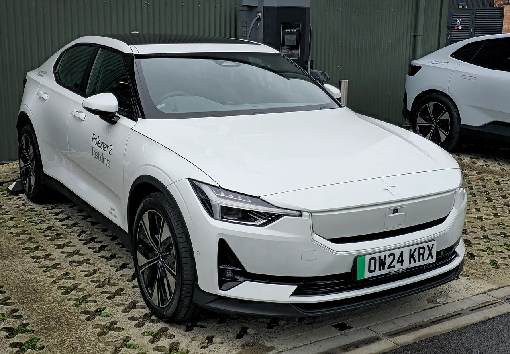
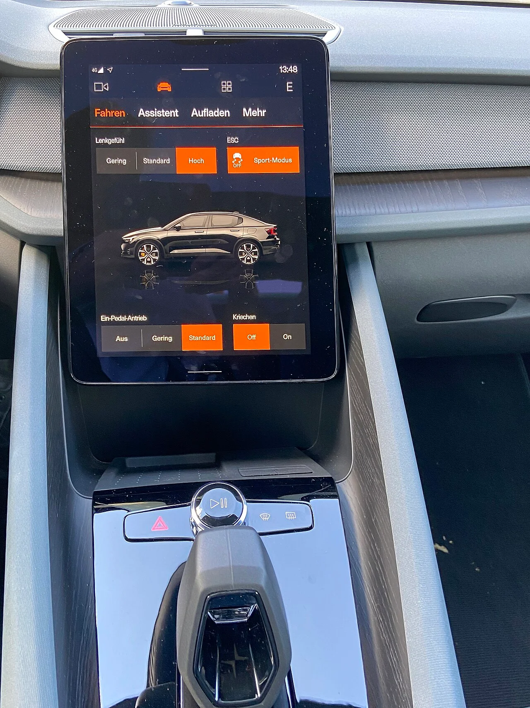
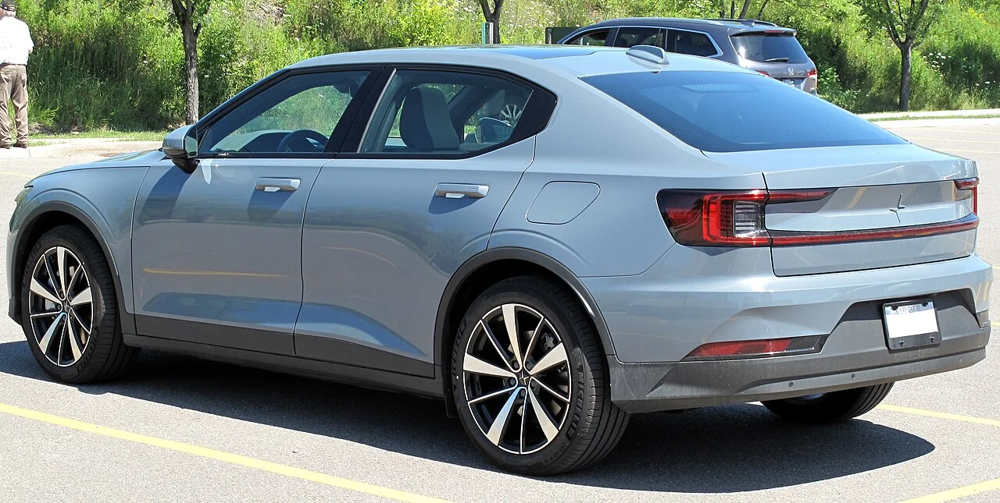

▲ 폴스타의 볼륨 모델 폴스타2. 2026년형부터 스탠다드 단일모터 트림의 배터리가 CATL 70kWh로 바뀌었다 ⓒ Elise240SX, Wikimedia Commons (CC BY-SA 4.0)
폴스타가 브랜드에서 가장 대중적인 세단형 모델인 '폴스타2'의 2026년형(MY26) 업데이트를 공개했습니다. 외관 디자인은 기존과 큰 차이가 없지만, 배터리·충전·인포테인먼트 등 실사용성과 직결되는 부분이 크게 손질됐습니다. 특히 가장 기본 사양인 스탠다드 단일모터 트림의 배터리가 기존 LG에너지솔루션의 69kWh 셀에서 CATL의 70kWh 셀로 바뀌면서, WLTP 기준 1회 충전 주행거리가 546km에서 554km로 늘어난 점이 이번 업데이트의 핵심입니다. 폴스타2는 SUV형인 폴스타3·4와 달리 해치백에 가까운 세단형 차체를 갖춰, 폴스타 라인업 중에서도 가장 대중적인 가격대와 크기로 판매량을 견인해온 모델입니다.
1. 배터리 & 주행거리 — 스탠다드 트림도 이제 554km
이번 업데이트의 중심은 배터리입니다. 가장 진입장벽이 낮은 스탠다드 단일모터 트림은 기존 LG에너지솔루션의 69kWh 배터리 대신 CATL의 70kWh 배터리를 새로 얹으면서, WLTP 기준 1회 충전 주행거리가 546km에서 554km로 늘었습니다. 용량 차이는 1kWh에 불과하지만 셀 구성과 에너지 밀도를 손봐 실질적인 주행거리 개선을 이끌어낸 것으로 풀이됩니다. 반면 82kWh 배터리를 쓰는 롱레인지 트림들은 배터리 자체는 그대로 유지했습니다.
롱레인지 라인업은 모터 구성에 따라 세 가지로 나뉩니다. 단일모터(후륜구동) 사양은 299마력(220kW) 출력에 WLTP 기준 658km로 폴스타2 전체 라인업 중 가장 긴 주행거리를 자랑하며, 듀얼모터 사륜구동 사양은 421마력(310kW)에 595km, 퍼포먼스 팩이 더해진 듀얼모터 사양은 476마력(350kW)에 566km를 기록합니다. 출력이 높아질수록 주행거리가 줄어드는 전형적인 트레이드오프를 보여주는 구성입니다.
| 트림 | 배터리 | 출력 | 주행거리 |
|---|---|---|---|
| 스탠다드 단일모터 | 70kWh(CATL) | - | 554km |
| 롱레인지 단일모터 | 82kWh | 299마력(220kW) | 658km |
| 롱레인지 듀얼모터 | 82kWh | 421마력(310kW) | 595km |
| 롱레인지 듀얼모터 퍼포먼스 | 82kWh | 476마력(350kW) | 566km |
2. 급속충전도 빨라졌다 — 10→80% 26분

▲ 급속충전기 앞에 선 폴스타2. 2026년형은 스탠다드 배터리의 최고 충전 출력을 135kW에서 180kW로 끌어올렸다 ⓒ Calreyn88, Wikimedia Commons (CC BY-SA 4.0)
배터리 용량뿐 아니라 충전 성능도 함께 개선됐습니다. 새 70kWh 배터리는 최고 DC 급속충전 출력이 기존 135kW에서 180kW로 높아지면서, 10%에서 80%까지 충전하는 데 걸리는 시간이 약 26분으로 단축됐습니다. 82kWh 롱레인지 배터리는 최고 205kW까지 받아들일 수 있어 같은 구간을 약 28분 만에 채울 수 있습니다. 여기에 테슬라식으로 충전을 시작·인증·결제까지 자동으로 처리해주는 '플러그 & 차지' 기능도 새로 추가돼, 별도의 앱 조작 없이 충전 케이블만 꽂으면 되는 편의성을 갖췄습니다.
3. 인포테인먼트 & 오디오 — 스냅드래곤 칩과 바워스&윌킨스

▲ 폴스타2의 11.2인치 세로형 중앙 디스플레이. 2026년형은 신형 퀄컴 스냅드래곤 칩을 얹어 반응 속도를 높였다 ⓒ Michael Kramer, Wikimedia Commons (CC BY-SA 3.0)
실내 쪽에서는 인포테인먼트 시스템의 두뇌가 바뀐 점이 눈에 띕니다. 11.2인치 세로형 터치스크린을 구동하는 프로세서가 신형 퀄컴 스냅드래곤 칩으로 교체되면서, 안드로이드 오토모티브 운영체제 기반 시스템 반응 속도와 차량용 앱 다운로드 속도가 눈에 띄게 빨라졌다는 평가입니다. 오디오 시스템도 선택지가 넓어졌습니다. 기본 8스피커 구성과 중간급인 하만카돈 13스피커·600와트 사양에 더해, 최상위 옵션으로 바워스&윌킨스의 14스피커·1,350와트 시스템이 새로 추가됐습니다. 트위터 온 톱(Tweeter-on-Top) 구조와 컨티뉴엄 미드레인지 스피커를 적용해 왜곡을 줄이고 음의 선명도를 높인 것이 특징입니다.
2026년형 폴스타2는 현재 유럽 시장에서 우선 주문이 가능하며, 북미를 포함한 다른 시장에는 올해 하반기부터 순차적으로 출시될 예정입니다.
4. 정작 국내에서는 살 수 없다 — 폴스타코리아 "차세대 모델 전까지 재출시 없다"

▲ 폴스타2 특유의 가로형 LED 테일램프가 강조된 후면부 ⓒ Elise240SX, Wikimedia Commons (CC BY-SA 4.0)
정작 국내 소비자에게는 이번 업데이트가 그림의 떡입니다. 폴스타코리아는 2025년형 폴스타2를 마지막으로 국내 판매를 중단한 상태입니다. 앞서 2025년형은 409km 주행거리의 스탠다드 단일모터 트림을 4,390만 원(300대 한정)에 처음 선보였고, 롱레인지 단일모터는 5,490만 원, 롱레인지 듀얼모터는 6,090만 원으로 책정돼 폴스타 서포트(400만 원)까지 더하면 3천만 원대 후반부터 시작하는 실구입가로 주목받은 바 있습니다. 7년·14만km 일반보증과 3년 무상 커넥티드 서비스가 포함된 조건이었습니다.
하지만 2026년 2월, 함종성 폴스타코리아 대표는 차세대(2세대) 폴스타2가 국내에 출시되기 전까지는 현행 폴스타2를 재출시할 계획이 없다고 공식적으로 못박았습니다. 즉 이번 554km 주행거리 업데이트가 적용된 2026년형 폴스타2는 국내에 들어오지 않으며, 국내 소비자가 다시 폴스타2를 만나려면 완전히 새로운 세대의 모델을 기다려야 하는 상황입니다.
결국 이번 554km 업데이트는 폴스타2가 아직 단종된 것이 아니라 꾸준히 개선되고 있는 현역 모델이라는 점을 보여주지만, 동시에 국내 시장에서는 당분간 이 개선된 상품성을 체험할 방법이 없다는 아쉬움도 함께 남깁니다. 폴스타코리아가 폴스타3·5 등 SUV 라인업 확대에 집중하는 사이, 브랜드의 출발점이자 가장 대중적인 모델이었던 폴스타2의 공백이 국내 소비자들에게 어떻게 받아들여질지는 차세대 모델의 출시 시점과 가격 정책에 달려 있을 것으로 보입니다.